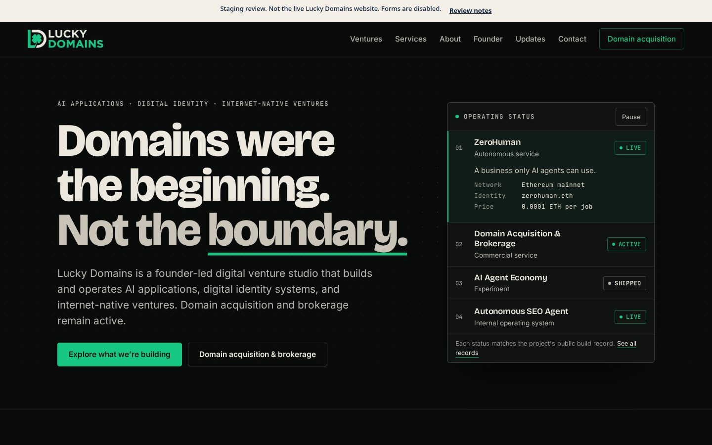
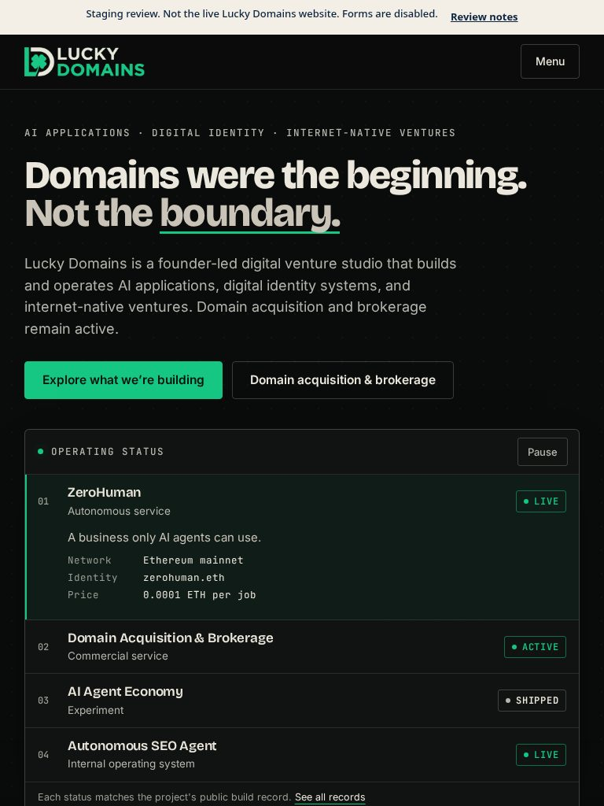
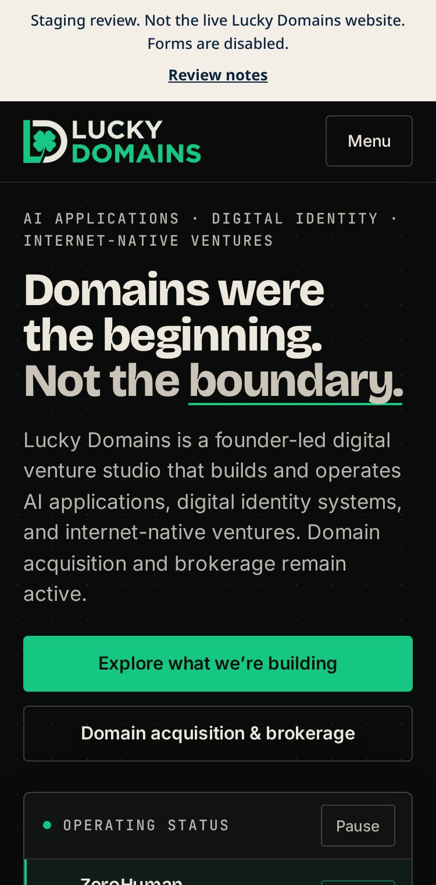
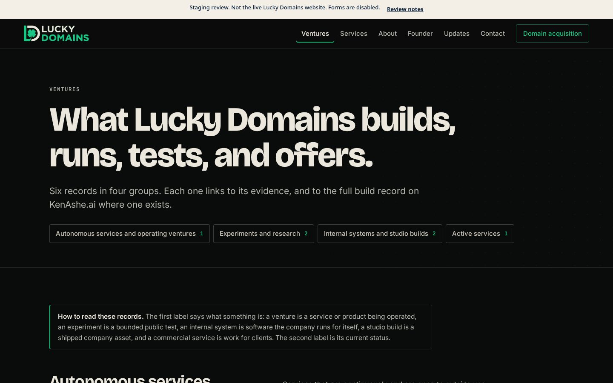
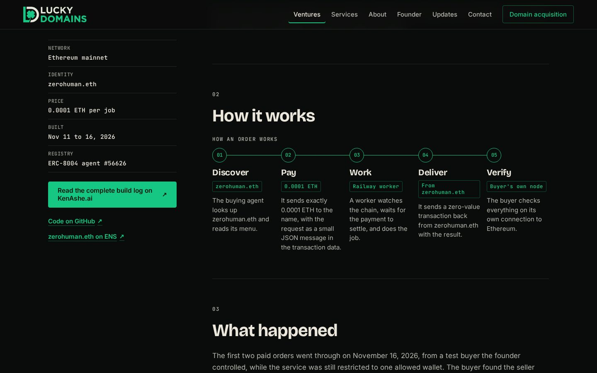
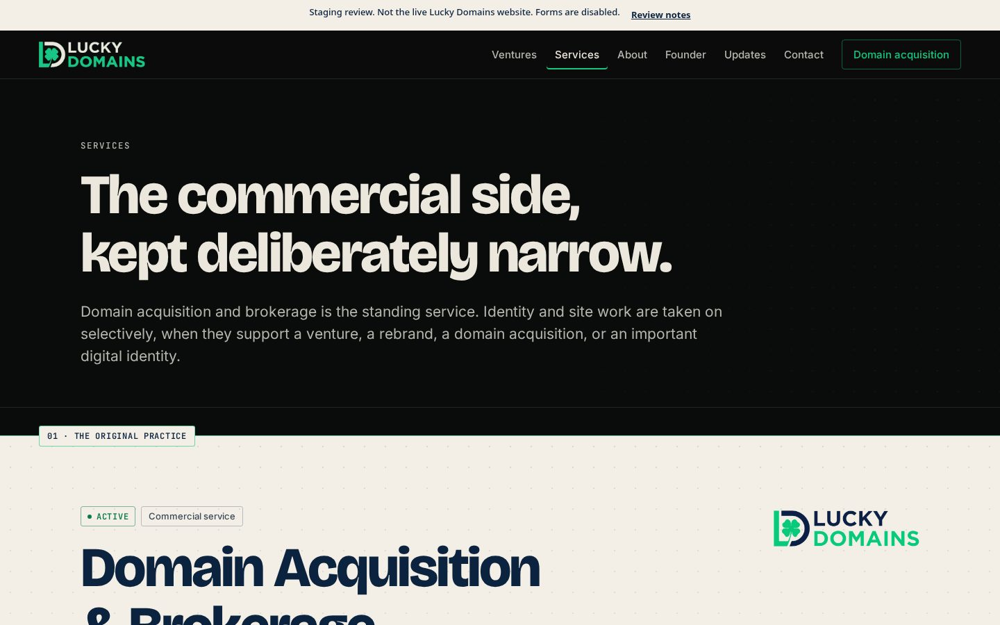
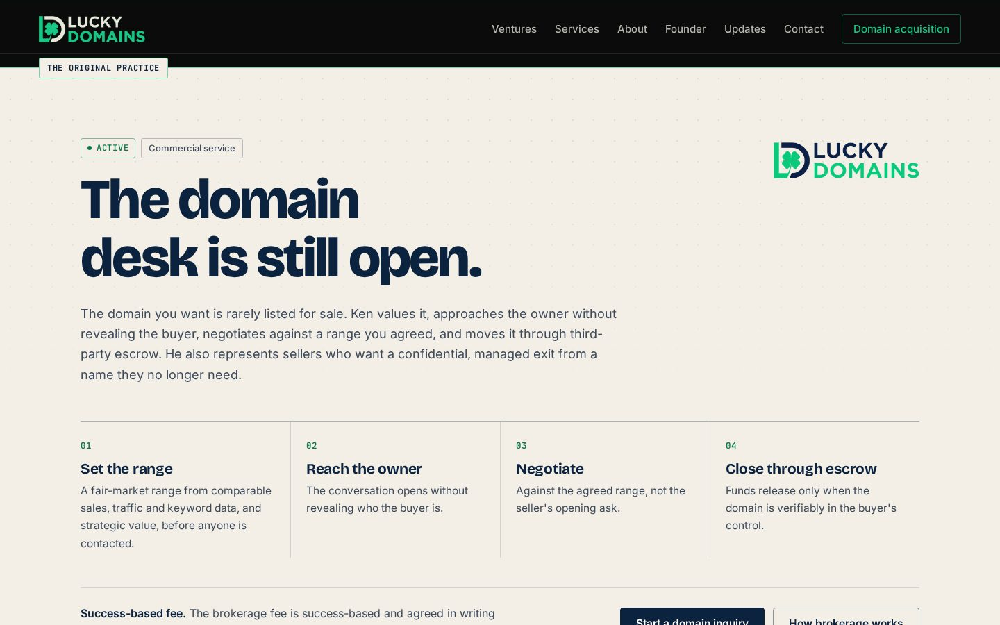
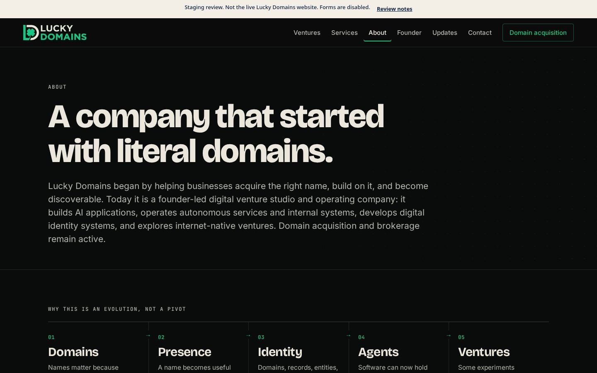
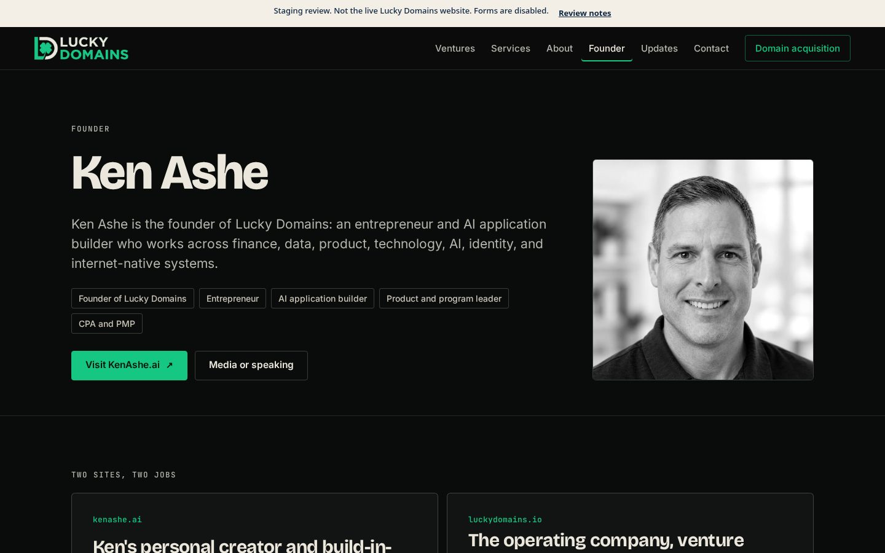
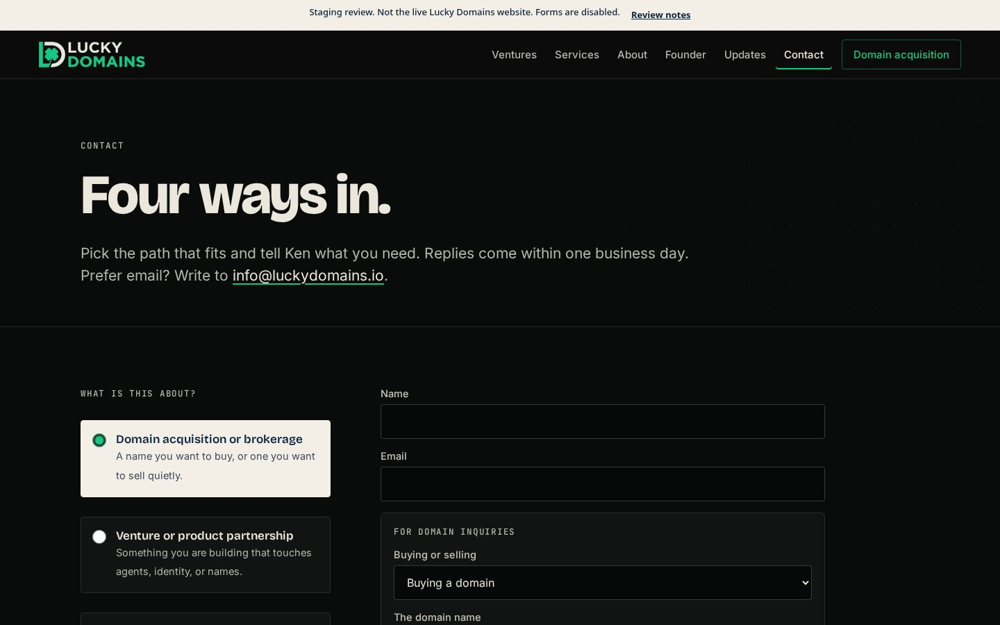

Staging review, November 23, 2026
Production candidate
The approved Venture Lab v2 design, ported to the production repository on a branch and exported here for review. This is a staging copy. It is not indexed and its contact form is disabled.
The live sites are unchanged. Nothing has been merged or deployed to LuckyDomains.io or KenAshe.ai. No DNS, GitHub Pages setting, form, or integration was touched.
Approved positioning
- Lucky Domains is a founder-led digital venture studio and operating company. It builds AI applications, operates autonomous services and internal systems, develops digital identity systems, explores internet-native ventures, and continues its original domain acquisition and brokerage practice.
- Ken Ashe builds and documents in public. KenAshe.ai holds the full build records.
- Standalone brands face their own users or customers.
- Domain brokerage remains an active Lucky Domains service.
| ZeroHuman | Autonomous service, LIVE. A Lucky Domains venture. Built by Ken Ashe, operated by Lucky Domains. |
|---|---|
| AI Agent Economy | Experiment, SHIPPED. A Lucky Domains experiment. |
| Autonomous SEO Agent | Internal operating system, LIVE. A Lucky Domains internal system. |
| Domain Acquisition and Brokerage | Commercial service, ACTIVE. |
| Sir Pitches-a-Lot | Competition agent, SHIPPED, in the experiments group. No date shown. |
| LuckyDomains.io | Studio build, LIVE. |
Every staged page
- Home /
- Ventures /ventures/
- ZeroHuman /ventures/zerohuman/
- AI Agent Economy /ventures/ai-agent-economy/
- Autonomous SEO Agent /ventures/autonomous-seo-agent/
- Services /services/
- Entity SEO /services/entity-seo/
- How we buy domains /how-we-buy-domains/
- About /about/
- Founder /founder/ken-ashe/
- News /news/
- June 2026 release /news/website-relaunch/
- Contact /contact/
- 404 page /404.html
Legacy redirect stubs, unchanged from production: /services.html, /about.html, /contact.html, /how-we-buy-domains.html, /news/website-relaunch.html. Each one sends you to its directory URL.
Current production and the candidate


Screenshots









Production copy changes
- Company description: “Lucky Domains is a founder-led digital venture studio that builds and operates AI applications, digital identity systems, and internet-native ventures. Domain acquisition and brokerage remain active.”
- “Internet-native ventures” is the only phrase used. The tests reject the variants.
- Build: AI applications and internet-native ventures. Operate: autonomous services, internal systems, and digital identities. Acquire: private domain acquisition and brokerage for clients.
- Beside ZeroHuman: “Built by Ken Ashe. Operated by Lucky Domains. Read the full build record on KenAshe.ai.”
- Relationship labels: A Lucky Domains venture, A Lucky Domains experiment, A Lucky Domains internal system.
- Ventures page opens with “What Lucky Domains builds, runs, tests, and offers.”
- All design-review language removed: no concept notice, no “proposed positioning”, no facts-as-of line, no review links.
- “Naming across DNS and ENS” removed as a service. ENS appears only as first-party experience.
- Founder page no longer leads with the accountant and SEO practice framing. Portrait, credentials, career, speaking and Forbes Business Council membership are kept.
- About page: five-step evolution, “Fortune favors the prepared.” as operating philosophy, company-only timeline. Speaking appearances moved to the Founder page.
- Retired from the old site: engagement tiers, local SEO, authority and links, monthly reporting, the home FAQ and the home fit section.
URLs
Preserved (10 pages, 5 stubs): /, /services/, /services/entity-seo/, /how-we-buy-domains/, /about/, /founder/ken-ashe/, /news/, /news/website-relaunch/, /contact/, /404.html, and the five legacy .html stubs. Anchors #domains, #selling, #websites, #seo and #pricing on Services still exist, and the old ?need= values on Contact still work.
New (4): /ventures/, /ventures/zerohuman/, /ventures/ai-agent-economy/, /ventures/autonomous-seo-agent/.
Retired: none. The navigation label Updates points at /news/. There is no /updates/ page.
SEO migration summary
- Every page has a unique title, description, self-referencing trailing-slash canonical, Open Graph and Twitter tags.
- The sitemap lists all 13 indexable pages on the apex host. robots.txt is unchanged.
- Legacy stubs are byte-for-byte unchanged: noindex, follow, canonical, instant refresh, query string and hash preserved.
- Production pages carry no robots meta. Only the 404 page and the stubs are noindex. (Everything on this staging copy is noindex by design.)
- The Organization description and topics were updated. Domain brokerage stays in them. The shared Person node is byte-identical to production today.
- No software product, customer, rating, or metric was added to structured data.
- Fonts are self-hosted, so pages make no third-party request.
Test results on the production branch
| Repository test suite | python3 tests/test_site.py: all 2,535 checks pass. |
|---|---|
| Accessibility | axe-core 4.10, WCAG 2 and 2.1 A and AA plus best-practice rules, 14 pages at 375 and 1440 px: no violations. |
| Responsive | 14 pages at 320, 375, 390, 768, 1024 and 1440 px: no horizontal overflow, no text under 12 px, no undersized touch targets. |
| Browsers | Chromium and Firefox ran every page and width with no console errors and no broken images. WebKit could not start in the build environment, so Safari is not tested. |
| Keyboard | Skip link, visible focus, menu opens and closes with Escape, status rows open on focus, Pause works, disclosures and FAQ open with Enter. |
| Reduced motion | No running animation and no hidden content on any page. |
| No JavaScript | Navigation, headings, all status rows, all FAQ answers and the contact email fallback are visible. |
| Layout shift | 0.0002 at most. |
| Contact form | Success, API-failure and network-failure states verified in a browser with the endpoint mocked. The access key is unchanged. One real submission could not be made: the build environment cannot reach the form service. It is step 9 of the launch checklist. |
| Lighthouse | Not available. The Lighthouse package could not be installed in the build environment (the package registry is blocked) and the PageSpeed API returned quota errors. No scores are reported. |
| Page weight | 230 to 355 KB on twelve pages on a first uncached load, uncompressed and measured locally. The release page is 874 KB, most of it its existing hero image. The three self-hosted font files are 156 KB of every first load and are cached after the first page. The current pages are about 105 to 150 KB plus Google Fonts (754 KB for the release). |
How staging differs from the production branch
- base path prefix
- noindex,nofollow,noarchive on every page
- head canonical and social URLs point at staging
- staging notice bar
- contact form disabled (key removed, endpoint replaced, submit blocked)
- CNAME, robots.txt, sitemap.xml, docs, tests, scripts and assets/source omitted
Source: kenashe/luckydomains, branch venture-lab-production-candidate, commit 9ec9a10852. Generated by tools/export_staging.py. The production branch is the source of truth.
Unresolved questions
- Sir Pitches-a-Lot: the KenAshe.ai build index says June 2026 and its build page says August 2026. No date is shown.
- “Longtime Bitcoin and Ethereum participant”: no public source states how long, so the Founder page says only that his public focus areas include AI agents, Bitcoin, digital identity, and domain names.
- Autonomous SEO Agent counts (63 researched, 8 live) come from an undated build record.
- ZeroHuman: the no-outside-purchase limitation is dated November 20, 2026 and stays until the build record changes.
- No announcement of the new positioning has been approved, so none is published. News shows the June release and dated project updates.
- One real contact-form submission could not be made from the build environment. It is step 9 of the launch checklist.
Production launch checklist (prepared, not executed)
- Owner reviews staging.
- Owner approves both draft pull requests.
- Rebase the branch on the current main.
- Re-run the tests and browser checks.
- Record the current production commit for rollback.
- Merge the Lucky Domains pull request to main.
- Watch the GitHub Pages deployment finish.
- Run python3 scripts/verify_live.py.
- Test the live contact form in a browser, once.
- Verify canonicals, robots, sitemap, Open Graph, structured data and the legacy stubs.
- Verify the www redirect.
- Verify MX and TXT records are unchanged.
- Review in Safari on a Mac and on an iPhone.
- Resubmit the sitemap in Search Console.
- Merge the KenAshe.ai cross-link pull request, only after the Lucky Domains pages are live.
- Capture final screenshots.
- Roll back at once if anything critical fails.